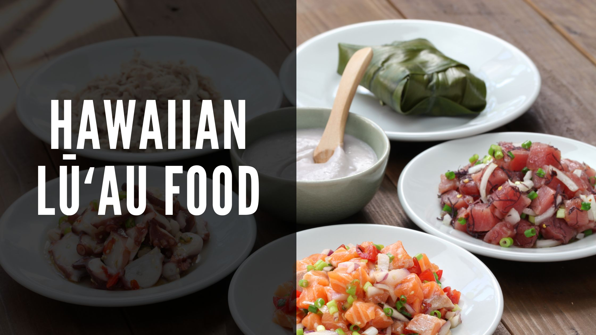

Hawaiian Food Menu

Poi
A traditional Hawaiian staple made from taro root, often served as a side dish.
A traditional Hawaiian staple made from taro root, often served as a side dish.
Award-winning Hawaiian cuisine offering traditional dishes.